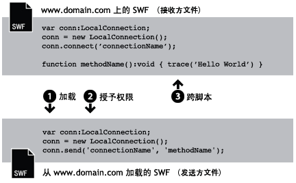
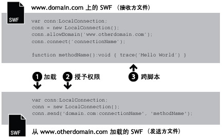
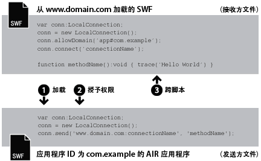

| 包 | flash.net |
| 类 | public class LocalConnection |
| 继承 | LocalConnection |
| 语言版本: | ActionScript 3.0 |
| 运行时版本: | AIR 1.0, Flash Player 9, Flash Lite 4 |
- 在一个 SWF 文件内
- 在多个 SWF 文件之间
- 在 AIR 应用程序的内容（基于 SWF 或基于 HTML）之间
- 在 AIR 应用程序的内容（基于 SWF 或基于 HTML）和运行于浏览器中的 SWF 内容之间
AIR 配置文件支持：所有桌面操作系统和所有 AIR for TV 设备均支持此功能，但移动设备不支持此功能。您可以使用 LocalConnection.isSupported 属性在运行时测试是否受支持。有关在多个配置文件之间支持 API 的详细信息，请参阅 AIR 配置文件支持。
注意：AIR for TV 设备仅支持 AIR 应用程序中基于 SWF 的内容之间的通信。
通过本地连接，可以在 SWF 文件之间进行这种通信，而不用使用 fscommand() 或 JavaScript。LocalConnection 对象只能在运行于同一台客户端计算机上的文件之间进行通信，但这些文件可以在不同的应用程序中运行。例如，浏览器中运行的文件和 Adobe AIR 中运行的 SWF 文件。
ActionScript 3.0 中创建的 LocalConnection 对象可以与 ActionScript 1.0 或 2.0 中创建的 LocalConnection 对象通信。反之亦然：ActionScript 1.0 或 2.0 中创建的 LocalConnection 对象可以与 ActionScript 3.0 中创建的 LocalConnection 对象通信。Flash Player 可自动处理不同版本 LocalConnection 对象间的通信。
可以使用三种方式将回调方法添加到 LocalConnection 对象：
- 使 LocalConnection 类成为子类，并添加方法。
- 将
LocalConnection.client属性设置为实现方法的对象。 - 创建扩展 LocalConnection 的动态类，并动态附加方法。
为了了解如何使用 LocalConnection 对象在两个文件之间进行通信，了解每个文件中使用的命令非常有用。一个文件被称为接收方文件；该文件中包含要调用的方法。接收方文件中必须包含一个 LocalConnection 对象和对 connect() 方法的调用。另一个文件被称为发送方文件；这是调用方法的那个文件。发送方文件中必须包含另一个 LocalConnection 对象和对 send() 方法的调用。
send() 和 connect() 的使用将有所不同，这取决于 文件是在同一个域中、在具有可预知域名的不同域中还是在具有不可预知域名（即动态域名）的不同域中。下文将说明这三种不同的情况，并针对每种情况分别提供代码示例。
同一个域。这是使用 LocalConnection 对象最简单的情况，它只允许在位于同一个域中的 LocalConnection 对象间通信，这是因为默认情况下，应用程序允许同域通信。当同一个域中的两个 文件通信时，无需实施任何特殊的安全措施，而只需将 connectionName 参数的同一个值传递给 connect() 和 send() 方法。

// receivingLC is in http://www.domain.com/receiving.swf
receivingLC.connect('myConnection');
// sendingLC is in http://www.domain.com/sending.swf
// myMethod() is defined in sending.swf
sendingLC.send('myConnection', 'myMethod');
具有可预知域名的不同域。当不同域中的两个 SWF 文件通信时，需要通过调用 allowDomain() 方法来允许在这两个不同域之间进行通信。还需要在 send() 方法中使用接收方 LocalConnection 对象的域名限定连接名：

// receivingLC is in http://www.domain.com/receiving.swf
receivingLC.allowDomain('www.anotherdomain.com');
receivingLC.connect('myConnection');
// sendingLC is in http://www.anotherdomain.com/sending.swf
sendingLC.send('www.domain.com:myConnection', 'myMethod');
具有不可预知域名的不同域。有时候，可能希望具有接收方 LocalConnection 对象的 文件在域之间具有更好的可移植性。为了避免在 send() 方法中指定域名，但要指出接收方和发送方 LocalConnection 对象不在同一个域中，可在 connect() 和 send() 调用中的连接名称之前加一个下划线 (_)。要允许在这两个不同域之间通信，请调用 allowDomain() 方法并传递您希望允许 LocalConnection 调用的域。或者，也可以传递通配符 (*) 参数来允许从所有域调用：

// receivingLC is in http://www.domain.com/receiving.swf
receivingLC.allowDomain('*');
receivingLC.connect('_myConnection');
// sendingLC is in http://www.anotherdomain.com/sending.swf
sendingLC.send('_myConnection', 'myMethod');
从 Flash Player 到 AIR 应用程序。在 AIR 应用程序沙箱中创建的 LocalConnection 对象使用一个特殊字符串作为连接前缀，而不是使用域名。此字符串的格式为 app#appID.pubID，其中，appID 是应用程序 ID，pubID 是应用程序的发行商 ID。（如果 AIR 应用程序使用发行商 ID，则仅包括发行商 ID。）例如，如果 AIR 应用程序的应用程序 ID 为“com.example”，没有发行商 ID，则您可以使用 app#com.example:myConnection 作为本地连接字符串。AIR 应用程序还必须调用 allowDomain() 方法，传入调用 SWF 文件的原始域：

// receivingLC is an AIR application with app ID = com.example (and no publisher ID)
receivingLC.allowDomain('www.domain.com');
receivingLC.connect('myConnection');
// sendingLC is in http://www.domain.com/sending.swf
sendingLC.send('app#com.example:myConnection', 'myMethod');
注意：如果 AIR 应用程序在 AIR 应用程序沙箱外部加载 SWF，则使用该 SWF 建立本地连接的规则与使用 Flash Player 中运行的 SWF 建立连接的规则相同。
从 AIR 应用程序到 Flash Playe。当 AIR 应用程序与 Flash Player 运行时中运行的 SWF 通信时，您需要通过调用 allowDomain() 方法并传入 AIR 应用程序的连接前缀，来允许两者之间的通信。例如，如果 AIR 应用程序的应用程序 ID 为“com.example”，没有发行商 ID，则您可以将字符串 app#com.example 传递给 allowDomain() 方法。您还需要在 send() 方法中使用接收方 LocalConnection 对象的域名（使用“localhost”作为从本地文件系统加载的 SWF 文件的域）来限定连接名：

// receivingLC is in http://www.domain.com/receiving.swf
receivingLC.allowDomain('app#com.example');
receivingLC.connect('myConnection');
// sendingLC is an AIR application with app ID = com.example (and no publisher ID)
sendingLC.send('www.domain.com:myConnection', 'myMethod');
从一个 AIR 应用程序到另一个 AIR 应用程序。要在两个 AIR 应用程序之间进行通信，您需要通过调用 allowDomain() 方法并传入发送方 AIR 应用程序的连接前缀，来允许两者之间的通信。例如，如果发送方应用程序的应用程序 ID 为“com.example”，没有发行商 ID，您可以将字符串 app#com.example 传递给接收方应用程序中的 allowDomain() 方法。还需要在 send() 方法中使用接收方 LocalConnection 对象的连接前缀限定连接名：

// receivingLC is an AIR application with app ID = com.sample (and no publisher ID)
receivingLC.allowDomain('app#com.example');
receivingLC.connect('myConnection');
// sendingLC is an AIR application with app ID = com.example (and no publisher ID)
sendingLC.send('app#com.sample:myConnection', 'myMethod');
可以使用 LocalConnection 对象发送和接收单个 文件中的数据，但这不是通常的用法。
有关 send() 和 connect() 方法的详细信息，请参阅 LocalConnection.send() 和 LocalConnection.connect() 条目中对 connectionName 参数的讨论。此外，请参阅 allowDomain() 和 domain 条目。
相关 API 元素
flash.net.LocalConnection.allowDomain()
flash.net.LocalConnection.domain
 隐藏继承的公共属性
隐藏继承的公共属性 显示继承的公共属性
显示继承的公共属性| 属性 | 由以下参数定义 | ||
|---|---|---|---|
| client : Object
表示对其调用回调方法的对象。 | LocalConnection | ||
 | constructor : Object
对类对象或给定对象实例的构造函数的引用。 | Object | |
| domain : String [只读]
一个字符串，它表示当前 文件所在位置的域。 | LocalConnection | ||
| isPerUser : Boolean
指示 LocalConnection 对象是仅限当前用户访问 (true) 还是计算机上的所有用户全都可以访问它 (false)。 | LocalConnection | ||
| isSupported : Boolean [静态] [只读]
如果当前平台支持 LocalConnection 类，则 isSupported 属性设置为 true，否则设置为 false。 | LocalConnection | ||
| 方法 | 由以下参数定义 | ||
|---|---|---|---|
创建 LocalConnection 对象。 | LocalConnection | ||
| addEventListener(type:String, listener:Function, useCapture:Boolean = false, priority:int = 0, useWeakReference:Boolean = false):void
使用 EventDispatcher 对象注册事件侦听器对象，以使侦听器能够接收事件通知。 | EventDispatcher | |
指定一个或多个可以将 LocalConnection 调用发送到此 LocalConnection 实例的域。 | LocalConnection | ||
指定一个或多个可以将 LocalConnection 调用发送到此 LocalConnection 对象的域。 | LocalConnection | ||
关闭（断开连接）LocalConnection 对象。 | LocalConnection | ||
准备 LocalConnection 对象以接收从 send() 命令（从发送方 LocalConnection 对象）发送的命令。 | LocalConnection | ||
|
将事件调度到事件流中。 | EventDispatcher | |
|
检查 EventDispatcher 对象是否为特定事件类型注册了任何侦听器。 | EventDispatcher | |
|
表示对象是否已经定义了指定的属性。 | Object | |
|
表示 Object 类的实例是否在指定为参数的对象的原型链中。 | Object | |
|
表示指定的属性是否存在、是否可枚举。 | Object | |
|
从 EventDispatcher 对象中删除侦听器。 | EventDispatcher | |
在使用 connect(connectionName) 方法打开的连接（位于接收方 LocalConnection 对象中）上调用 methodName 方法。 | LocalConnection | ||
|
设置循环操作动态属性的可用性。 | Object | |
|
返回此对象的字符串表示形式，其格式设置遵守区域设置特定的约定。 | Object | |
|
返回指定对象的字符串表示形式。 | Object | |
|
返回指定对象的原始值。 | Object | |
|
检查是否用此 EventDispatcher 对象或其任何祖代为指定事件类型注册了事件侦听器。 | EventDispatcher | |
| 事件 | 摘要 | 由以下参数定义 | ||
|---|---|---|---|---|
| [广播事件] Flash Player 或 AIR 应用程序获得操作系统焦点并变为活动状态时将调度此事件。 | EventDispatcher | ||
| 在异步引发异常（即来自本机异步代码）时调度。 | LocalConnection | |||
| [广播事件] Flash Player 或 AIR 应用程序失去操作系统焦点并变为非活动状态时将调度此事件。 | EventDispatcher | ||
| 若对 LocalConnection.send() 的调用尝试向另一个安全沙箱发送数据，则进行调度。 | LocalConnection | |||
| 在 LocalConnection 对象报告其状态时调度。 | LocalConnection | |||
client | 属性 |
domain | 属性 |
domain:String [只读] | 语言版本: | ActionScript 3.0 |
| 运行时版本: | AIR 1.0, Flash Player 9, Flash Lite 4 |
一个字符串，它表示当前 文件所在位置的域。
在运行于 Adobe AIR 的 application 安全沙箱的内容（使用 AIR 应用程序安装的内容）中，运行时将使用字符串 app# 后跟 AIR 应用程序的应用程序 ID（在应用程序描述符文件中定义）来代替该超级域。例如，应用程序 ID 为 com.example.air.MyApp connectionName 的应用程序的 connectionName 将解析为 "app#com.example.air.MyApp:connectionName"。
在为 Flash Player 9 或更高版本发布的 SWF 文件中，返回的字符串就是文件所在的域并包括子域。例如，如果 文件位于 www.adobe.com，则此命令将返回 "www.adobe.com"。
如果当前文件是在 Flash Player 中运行并驻留在客户端计算机上的本地文件，则此命令将返回“localhost”。
此属性最常见的用法是，将发送方 LocalConnection 对象的域名作为要在接收方 LocalConnection 对象中调用的方法的参数包括在内，或者与 LocalConnection.allowDomain() 一起使用以接受来自指定域的命令。如果仅启用位于同一个域的 LocalConnection 对象之间的通信，则可能不需要使用此属性。
实现
public function get domain():String相关 API 元素
isPerUser | 属性 |
isPerUser:Boolean| 语言版本: | ActionScript 3.0 |
| 运行时版本: | Flash Player 10.0.32, AIR 1.5.2 |
指示 LocalConnection 对象是仅限当前用户访问 (true) 还是计算机上的所有用户全都可以访问它 (false)。此属性只影响在 Mac OS X 中运行的内容；其它平台忽略此参数。Windows 和 Linux 操作系统上的连接授权始终是每用户授权。
在 Flash Player 10.0.22 和 AIR 1.5.1 以及它们的早期版本中，Mac OS X 上的所有 LocalConnection 对象都具有全局作用域。始终将此属性设置为 true，除非您需要保留与早期版本的兼容性。在将来发布的版本中，此属性的默认值可能更改为 true。
默认值为 false。
实现
public function get isPerUser():Boolean public function set isPerUser(value:Boolean):voidisSupported | 属性 |
LocalConnection | () | 构造函数 |
public function LocalConnection()| 语言版本: | ActionScript 3.0 |
| 运行时版本: | AIR 1.0, Flash Player 9, Flash Lite 4 |
创建 LocalConnection 对象。可以使用 LocalConnection 对象启用在同一客户端计算机上运行的不同文件之间的通信。
相关 API 元素
allowDomain | () | 方法 |
public function allowDomain(... domains):void| 语言版本: | ActionScript 3.0 |
| 运行时版本: | AIR 1.0, Flash Player 9, Flash Lite 4 |
指定一个或多个可以将 LocalConnection 调用发送到此 LocalConnection 实例的域。
您无法使用此方法允许使用安全协议 (HTTPS) 承载的文件由使用非安全协议承载的文件进行访问；必须改用 allowInsecureDomain() 方法。
您可能想要使用此方法，以便在不知道来自于不同域的子级文件究竟来自哪个最终域的情况下，使该子级文件能够对父级文件进行 LocalConnection 调用。例如，当您使用负载平衡重定向或第三方服务器时就可能发生这种情况。在这种情况下，您可以使用用于加载的 LoaderInfo 对象的 url 属性，以获取要与 allowDomain() 方法配合使用的域。例如，如果使用 Loader 对象加载子级文件，则您可以在文件加载后检查 Loader 对象的 contentLoaderInfo.url 属性，并从完整的 URL 字符串中解析出域。如果您这样做的话，请务必等待文件加载完毕，因为只有在该文件完全加载后，contentLoaderInfo.url 属性才会具有其最终的正确值。
也可能出现相反的情况：您可能创建了一个子级文件，用以接受来自父级的 LocalConnection 调用，但却不知道其父级的域。在这种情况下，可以通过检查域参数是否与已加载的 文件中 loaderInfo.url 属性的域相匹配来实现此方法。同样，您必须从 loaderInfo.url 的完整 URL 中解析出该域。在这种情况下，您不必等待父级 文件加载；加载子级时，父级已经加载完毕。
使用此方法时，请考虑 Flash Player 安全模型。默认情况下，LocalConnection 对象与创建它的 文件的沙箱相关联，并且不允许对 LocalConnection 对象进行跨域调用，除非在接收方 文件中调用 LocalConnection.allowDomain() 方法。但在 Adobe AIR 中，application 安全沙箱中的内容（使用 AIR 应用程序安装的内容）不受这些安全限制的约束。
有关安全性的详细信息，请参阅 Flash Player 开发人员中心主题：安全性。
注意：allowDomain() 方法的格式已更改，与其在 ActionScript 1.0 和 2.0 中的格式不同。在这两个早期版本中，allowDomain 是可以实现的回调方法。在 ActionScript 3.0 中，allowDomain() 是调用的 LocalConnection 的内置方法。由于这种更改，allowDomain() 的用法与 flash.system.Security.allowDomain() 基本相同。
参数
... domains — 对您在其上允许 LocalConnection 调用的域进行命名的一个或多个字符串。此参数有两种特殊用法：
|
引发
ArgumentError — 所有指定的参数都必须为非空字符串。
|
相关 API 元素
allowInsecureDomain | () | 方法 |
public function allowInsecureDomain(... domains):void| 语言版本: | ActionScript 3.0 |
| 运行时版本: | AIR 1.0, Flash Player 9, Flash Lite 4 |
指定一个或多个可以将 LocalConnection 调用发送到此 LocalConnection 对象的域。
allowInsecureDomain() 方法的用法与 allowDomain() 方法相似，不同之处是 allowInsecureDomain() 方法允许非 HTTPS 来源的文件将 LocalConnection 调用发送至 HTTPS 来源的 SWF 文件。仅当您在使用 HTTPS 加载的文件中调用 allowInsecureDomain() 方法时，才能体现这种不同。即使在同一个域中跨越非 HTTPS/HTTPS 边界，也必须调用 allowInsecureDomain() 方法；默认情况下，即使在同一个域中，也不允许从非 HTTPS 文件到 HTTPS 文件进行 LocalConnection 调用。
不建议调用 allowInsecureDomain()，因为这可能会削弱 HTTPS 提供的安全性。通过 HTTPS 加载文件时，您可以确信在通过网络传输文件时，文件不会被篡改。如果随后允许非 HTTPS 文件对 HTTPS 文件进行 LocalConnection 调用，则要接受来自可能在传输过程中已被篡改的 文件的调用。这通常需要格外小心，因为您无法确保到达 HTTPS 文件的 LocalConnection 调用的真实性。
默认情况下，使用 HTTPS 协议承载的文件只能被其他使用 HTTPS 协议承载的文件访问。这种实现保持了 HTTPS 协议所提供的完整性。
不建议使用此方法覆盖默认行为，因为这样做会削弱 HTTPS 安全性。但在某些情况下您可能需要这样做；例如，需要允许从为 Flash Player 6 或更早版本发布的 HTTP SWF 文件访问为 Flash Player 9 或更高版本发布的 HTTPS SWF 文件。
有关安全性的详细信息，请参阅 Flash Player 开发人员中心主题：安全性。
参数
... domains — 对您在其上允许 LocalConnection 调用的域进行命名的一个或多个字符串。此参数有两种特殊用法：
|
引发
ArgumentError — 所有指定的参数都必须为非空字符串。
|
相关 API 元素
close | () | 方法 |
public function close():void| 语言版本: | ActionScript 3.0 |
| 运行时版本: | AIR 1.0, Flash Player 9, Flash Lite 4 |
关闭（断开连接）LocalConnection 对象。在您不再需要该对象来接受命令时（例如，当您要在另一个 SWF 文件中使用相同的 connectionName 参数发出 connect() 命令时）发出此命令。
引发
ArgumentError — 未连接 LocalConnection 实例，因而无法将其关闭。
|
相关 API 元素
connect | () | 方法 |
public function connect(connectionName:String):void| 语言版本: | ActionScript 3.0 |
| 运行时版本: | AIR 1.0, Flash Player 9, Flash Lite 4 |
准备 LocalConnection 对象以接收从 send() 命令（从发送方 LocalConnection 对象）发送的命令。同 connect() 方法一起使用的对象被称为接收方 LocalConnection 对象。接收方和发送方对象必须运行于同一台客户端计算机上。
要避免出现竞争状况，请在调用附加到接收方 LocalConnection 对象的方法之前先定义这些方法，如 LocalConnection 类示例所示。
默认情况下，connectionName 将解析为值“superdomain:connectionName”，其中 superdomain 是包含 connect() 命令的文件的超级域。例如，如果包含接收方 LocalConnection 对象的 文件位于 www.someDomain.com，则 connectionName 解析为 "someDomain.com:connectionName"。（如果 Flash Player 中运行的文件位于客户端计算机上，则分配给 superdomain 的值为“localhost”。）
在运行于 Adobe AIR 的 application 安全沙箱的内容（使用 AIR 应用程序安装的内容）中，运行时将使用字符串 app# 后跟 AIR 应用程序的应用程序 ID（在应用程序描述符文件中定义）来代替该超级域。例如，应用程序 ID 为 com.example.air.MyApp connectionName 的应用程序的 connectionName 将解析为 "app#com.example.air.MyApp:connectionName"。
此外，在默认情况下，Flash Player 只允许接收方 LocalConnection 对象从连接名称也解析为值 "superdomain:connectionName" 的发送方 LocalConnection 对象接受命令。这样，Flash Player 就使得位于同一个域中的文件可以很容易地相互通信。
如果您仅在同一个域中的 文件之间实现通讯，请为 connectionName 指定一个不以下划线 (_) 开头且不指定域名的字符串（例如 "myDomain:connectionName"）。在 connect(connectionName) 方法中使用同一个字符串。
如果要使位于不同域中的 文件之间实现通信，则为 connectionName 指定一个以下划线 (_) 开头的字符串，这样就会使具有接收方 LocalConnection 对象的 文件在域之间具有更好的可移植性。下面是两种可能的情形：
- 如果
connectionName字符串不以下划线 (_) 开头，则会添加一个超级域前缀和一个冒号（例如“myDomain:connectionName”）。虽然这可以确保您的连接不会与其他域中具有同一名称的连接相互冲突，但任何发送方 LocalConnection 对象都必须指定此超级域（例如"myDomain:connectionName"）。如果具有接收方 LocalConnection 对象的 文件被移动到另一个域中，则播放器会更改该前缀，以反映新的超级域（例如"anotherDomain:connectionName"）。所有发送方 LocalConnection 对象必须进行手动编辑，以指向这个新超级域。 - 如果
connectionName字符串以下划线开头（例如“_connectionName”），则不会向该字符串添加前缀。这意味着接收方和发送方 LocalConnection 对象都将使用相同的connectionName字符串。如果接收方对象使用allowDomain()来指定可以接受来自任何域的连接，则具有接收方 LocalConnection 对象的 文件可以移动到另一个域，而无需更改任何发送方 LocalConnection 对象。
有关详细信息，请参阅类概述中的讨论和 send() 中对 connectionName 的讨论以及 allowDomain() 和 domain 条目。
注意：冒号用作一种特殊字符，以分隔 connectionName 超级域和字符串。包含冒号的 connectionName 字符串无效。
使用此方法时，请考虑 Flash Player 安全模型。默认情况下，LocalConnection 对象与创建它的 文件的沙箱相关联，并且不允许对 LocalConnection 对象进行跨域调用，除非在接收方 文件中调用 LocalConnection.allowDomain() 方法。可以在包含 内容的 HTML 页中设置 object 和 embed 标签的 allowNetworking 参数，防止 SWF 文件使用此方法。但在 Adobe AIR 中，application 安全沙箱中的内容（使用 AIR 应用程序安装的内容）不受这些安全限制的约束。
有关安全性的详细信息，请参阅 Flash Player 开发人员中心主题：安全性。
参数
connectionName:String — 一个字符串，对应于要与接收方 LocalConnection 对象进行通信的 send() 命令中指定的连接名称。
|
引发
TypeError — 传递给 connectionName 参数的值必须为非空值。
| |
ArgumentError — 出现此错误有以下三种原因：1) 传递给 connectionName 参数的字符串值为空。请传递非空值。2) 传递给 connectionName 参数的值包含冒号 (:)。冒号用作一种特殊字符，在 send() 方法（而非 connect() 方法）中用于分隔超级域和 connectionName 字符串。3) 已连接 LocalConnection 实例。
|
相关 API 元素
send | () | 方法 |
public function send(connectionName:String, methodName:String, ... arguments):void| 语言版本: | ActionScript 3.0 |
| 运行时版本: | AIR 1.0, Flash Player 9, Flash Lite 4 |
在使用 connect(connectionName) 方法打开的连接（位于接收方 LocalConnection 对象 中）上调用 methodName 方法。同 send() 方法一起使用的对象被称为发送方 LocalConnection 对象。包含发送方对象的 SWF 文件和包含接收方对象的 SWF 文件必须在同一台客户端计算机上运行。
您能够以参数形式传递给此命令的数据量限制为 40 千字节。如果 send() 引发 ArgumentError，但是您的语法是正确的，请尝试将 send() 请求分为多个命令，每个命令的数据量不超过 40K。
如 connect() 条目中所述，默认情况下，会将当前超级域添加到 connectionName。如果您要在不同的域之间实现通讯，则在发送方和接收方 LocalConnection 对象中都需要定义 connectionName，这样当前超级域就不会添加到 connectionName。您可以使用以下两种方法中的一种实现这一目的：
- 在发送方 LocalConnection 对象和接收方 LocalConnection 对象中
connectionName的开头使用下划线 (_)。在包含接收方对象的 文件中，使用LocalConnection.allowDomain()指定将接受来自任何域的连接。这一实现使您可以在任何域中存储发送方 文件和接收方 SWF 文件。 - 在发送方 LocalConnection 对象中包含
connectionName中的超级域，例如myDomain.com:myConnectionName。在接收方对象中，使用LocalConnection.allowDomain()指定将接受来自指定超级域的连接（本例中为 myDomain.com），或者接受来自任何域的连接。
注意：不能在接收方 LocalConnection 对象的 connectionName 中指定超级域，只能在发送方 LocalConnection 对象中指定。
使用此方法时，请考虑 Flash Player 安全模型。默认情况下，LocalConnection 对象与创建它的 文件的沙箱相关联，并且不允许对 LocalConnection 对象进行跨域调用，除非在接收方 文件中调用 LocalConnection.allowDomain() 方法。对于在浏览器中运行的 SWF 内容，通过在包含 SWF 内容的 HTML 页中设置 object 和 embed 标签的 allowNetworking 参数，可以防止文件使用此方法。但在 Adobe AIR 中，application 安全沙箱中的内容（使用 AIR 应用程序安装的内容）不受这些安全限制的约束。
有关安全性的详细信息，请参阅 Flash Player 开发人员中心主题：安全性。
参数
connectionName:String — 对应于要与发送方 LocalConnection 对象进行通信的 connect() 命令中指定的连接名称。
| |
methodName:String — 要在接收方 LocalConnection 对象中调用的方法的名称。以下方法名会导致命令失败：send、connect、close、allowDomain、allowInsecureDomain、client 和 domain。
| |
... arguments — 要传递给指定方法的附加可选参数。
|
事件
securityError: — LocalConnection.send() 尝试与执行调用的代码不能访问的安全沙箱中的 SWF 文件通信。在接收方的 LocalConnection.allowDomain() 实现中可以避免此问题。
| |
status: — 如果 level 属性的值为 "status"，则调用成功；如果值为 "error"，则调用失败。如果接收方 SWF 文件拒绝连接，则调用失败。
|
引发
TypeError — connectionName 或 methodName 的值为空。请将非空值传递给这些参数。
| |
ArgumentError — 出现此错误是由于以下某种原因：1) connectionName 或 methodName 的值为空字符串。请将有效字符串传递给这些参数。2) methodName 中指定的方法受限。3) 正在发送的序列化消息过大（超过 40K）。
|
相关 API 元素
asyncError | 事件 |
flash.events.AsyncErrorEvent属性 AsyncErrorEvent.type =
flash.events.AsyncErrorEvent.ASYNC_ERROR| 语言版本: | ActionScript 3.0 |
| 运行时版本: | AIR 1.0, Flash Player 9, Flash Lite 4 |
在异步引发异常（即来自本机异步代码）时调度。
AsyncErrorEvent.ASYNC_ERROR 常数定义 asyncError 事件对象的 type 属性值。
此事件具有以下属性：
| 属性 | 值 |
|---|---|
bubbles | false |
cancelable | false；没有要取消的默认行为。 |
currentTarget | 当前正在使用某个事件侦听器处理 Event 对象的对象。 |
target | 调度事件的对象。 |
error | 触发此事件的错误。 |
securityError | 事件 |
flash.events.SecurityErrorEvent属性 SecurityErrorEvent.type =
flash.events.SecurityErrorEvent.SECURITY_ERROR| 语言版本: | ActionScript 3.0 |
| 运行时版本: | AIR 1.0, Flash Player 9, Flash Lite 4 |
若对 LocalConnection.send() 的调用尝试向另一个安全沙箱发送数据，则进行调度。
SecurityErrorEvent.SECURITY_ERROR 常量定义 securityError 事件对象的 type 属性值。
此事件具有以下属性：
| 属性 | 值 |
|---|---|
bubbles | false |
cancelable | false；没有要取消的默认行为。 |
currentTarget | 当前正在使用某个事件侦听器处理 Event 对象的对象。 |
target | 报告安全错误的网络对象。 |
text | 要显示为错误消息的文本。 |
相关 API 元素
status | 事件 |
flash.events.StatusEvent属性 StatusEvent.type =
flash.events.StatusEvent.STATUS| 语言版本: | ActionScript 3.0 |
| 运行时版本: | AIR 1.0, Flash Player 9, Flash Lite 4 |
在 LocalConnection 对象报告其状态时调度。如果 LocalConnection.send() 成功，则 status 事件对象的 level 属性的值为 "status"；如果调用失败，则 level 属性为 "error"。如果接收方 文件拒绝连接，则调用失败，并且不会通知发送方 文件。
status 事件对象的 type 属性值。
此事件具有以下属性：
| 属性 | 值 |
|---|---|
bubbles | false |
cancelable | false；没有要取消的默认行为。 |
code | 对象状态的描述。 |
currentTarget | 当前正在使用某个事件侦听器处理 Event 对象的对象。 |
level | 消息类别，例如 "status"、"warning" 或 "error"。 |
target | 报告其状态的对象。 |
相关 API 元素
在 LocalConnectionSenderExample SWF 文件中，将创建 LocalConnection 实例，并且当按下按钮时使用 call() 方法通过名为“myConnection”的连接调用 SWF 文件中名为 lcHandler 的方法，调用时将 TextField 的内容作为参数传递。
在 LocalConnectionReceiverExample SWF 文件中，将创建 LocalConnection 实例并调用 connect() 方法，将此 SWF 文件指定为发送到名为“myConnection”的连接的消息的接收方。此外，此类还包括一个名为 lcHandler() 的公共方法，此方法就是 LocalConnectionSenderExample SWF 文件调用的方法。调用时，作为参数传入的文本将被追加到舞台的 TextField 中。
注意：为了测试此示例，必须将两个 SWF 文件同时加载到同一台计算机上。
// Code in LocalConnectionSenderExample.as
package {
import flash.display.Sprite;
import flash.events.MouseEvent;
import flash.net.LocalConnection;
import flash.text.TextField;
import flash.text.TextFieldType;
import flash.events.StatusEvent;
import flash.text.TextFieldAutoSize;
public class LocalConnectionSenderExample extends Sprite {
private var conn:LocalConnection;
// UI elements
private var messageLabel:TextField;
private var message:TextField;
private var sendBtn:Sprite;
public function LocalConnectionSenderExample() {
buildUI();
sendBtn.addEventListener(MouseEvent.CLICK, sendMessage);
conn = new LocalConnection();
conn.addEventListener(StatusEvent.STATUS, onStatus);
}
private function sendMessage(event:MouseEvent):void {
conn.send("myConnection", "lcHandler", message.text);
}
private function onStatus(event:StatusEvent):void {
switch (event.level) {
case "status":
trace("LocalConnection.send() succeeded");
break;
case "error":
trace("LocalConnection.send() failed");
break;
}
}
private function buildUI():void {
const hPadding:uint = 5;
// messageLabel
messageLabel = new TextField();
messageLabel.x = 10;
messageLabel.y = 10;
messageLabel.text = "Text to send:";
messageLabel.autoSize = TextFieldAutoSize.LEFT;
addChild(messageLabel);
// message
message = new TextField();
message.x = messageLabel.x + messageLabel.width + hPadding;
message.y = 10;
message.width = 120;
message.height = 20;
message.background = true;
message.border = true;
message.type = TextFieldType.INPUT;
addChild(message);
// sendBtn
sendBtn = new Sprite();
sendBtn.x = message.x + message.width + hPadding;
sendBtn.y = 10;
var sendLbl:TextField = new TextField();
sendLbl.x = 1 + hPadding;
sendLbl.y = 1;
sendLbl.selectable = false;
sendLbl.autoSize = TextFieldAutoSize.LEFT;
sendLbl.text = "Send";
sendBtn.addChild(sendLbl);
sendBtn.graphics.lineStyle(1);
sendBtn.graphics.beginFill(0xcccccc);
sendBtn.graphics.drawRoundRect(0, 0, (sendLbl.width + 2 + hPadding + hPadding), (sendLbl.height + 2), 5, 5);
sendBtn.graphics.endFill();
addChild(sendBtn);
}
}
}
// Code in LocalConnectionReceiverExample.as
package {
import flash.display.Sprite;
import flash.net.LocalConnection;
import flash.text.TextField;
public class LocalConnectionReceiverExample extends Sprite {
private var conn:LocalConnection;
private var output:TextField;
public function LocalConnectionReceiverExample() {
buildUI();
conn = new LocalConnection();
conn.client = this;
try {
conn.connect("myConnection");
} catch (error:ArgumentError) {
trace("Can't connect...the connection name is already being used by another SWF");
}
}
public function lcHandler(msg:String):void {
output.appendText(msg + "\n");
}
private function buildUI():void {
output = new TextField();
output.background = true;
output.border = true;
output.wordWrap = true;
addChild(output);
}
}
}
Tue Jun 12 2018, 11:04 AM Z